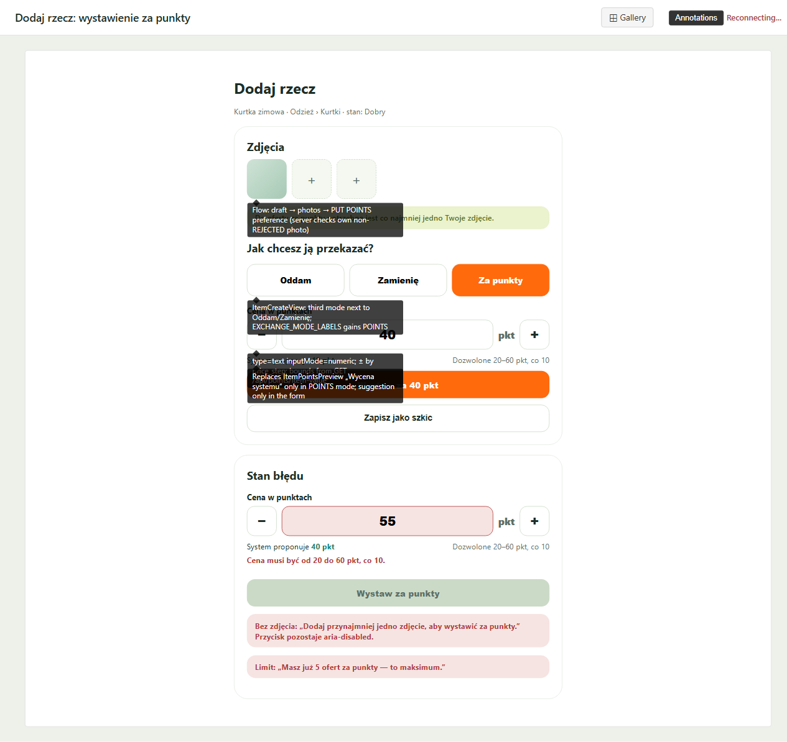
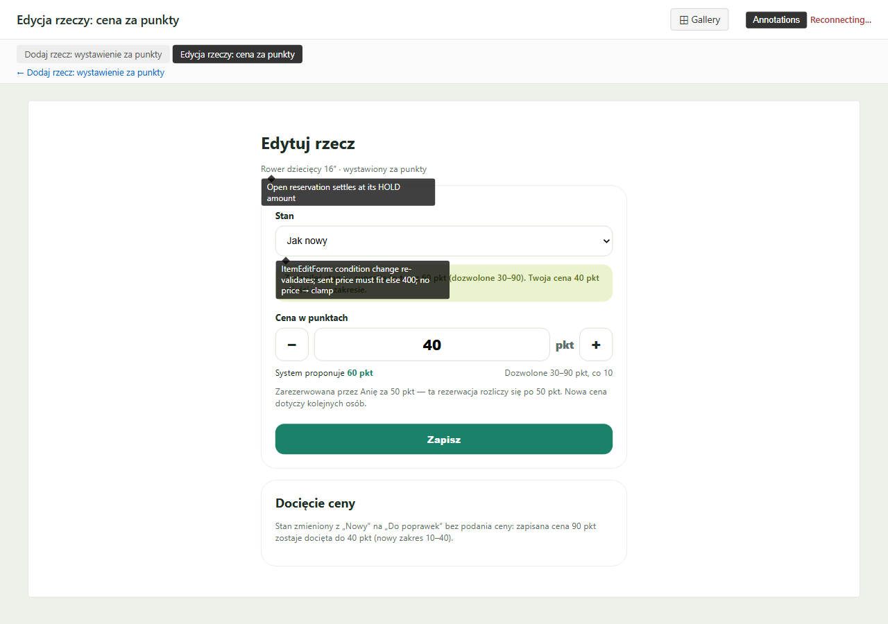
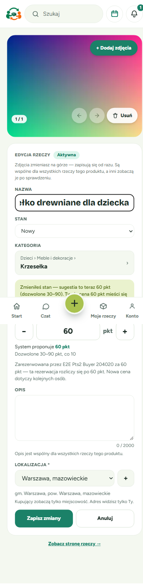
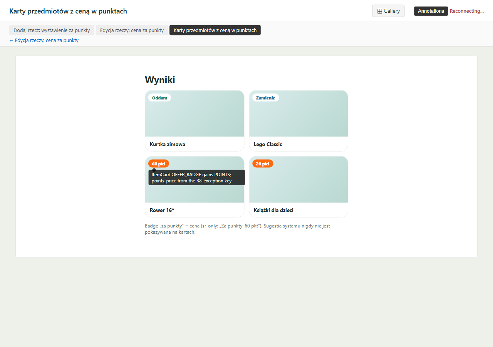
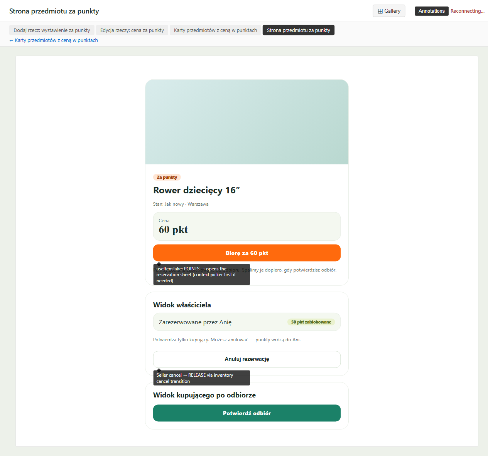
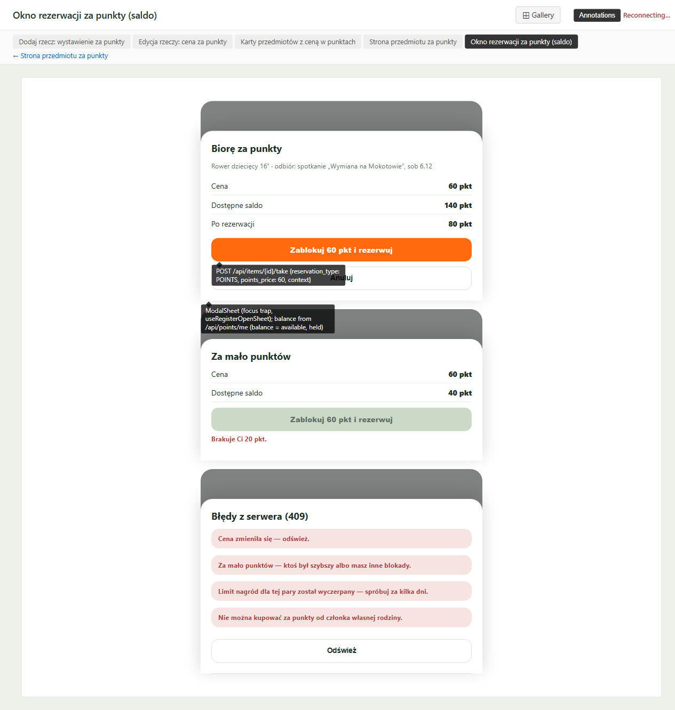
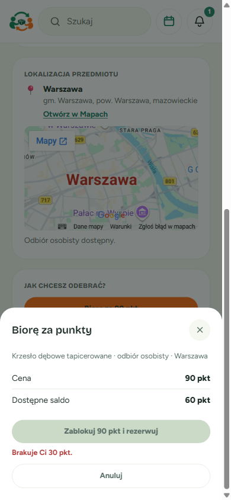
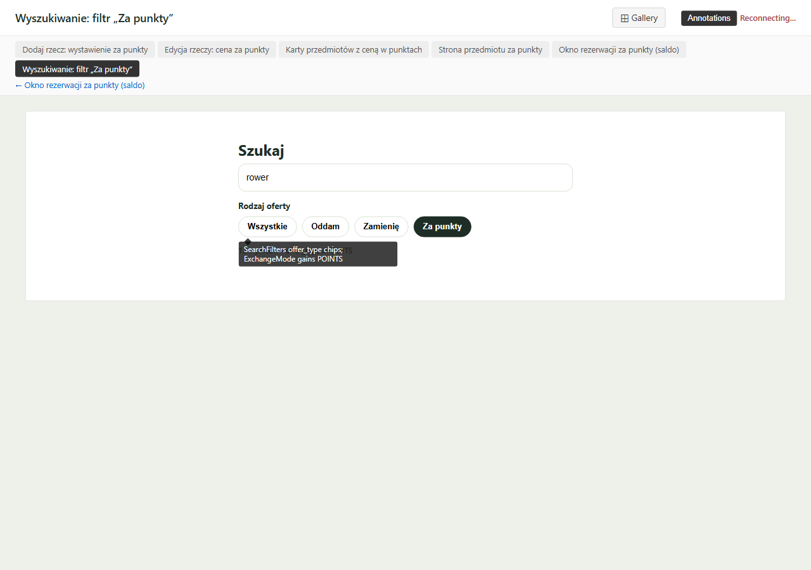
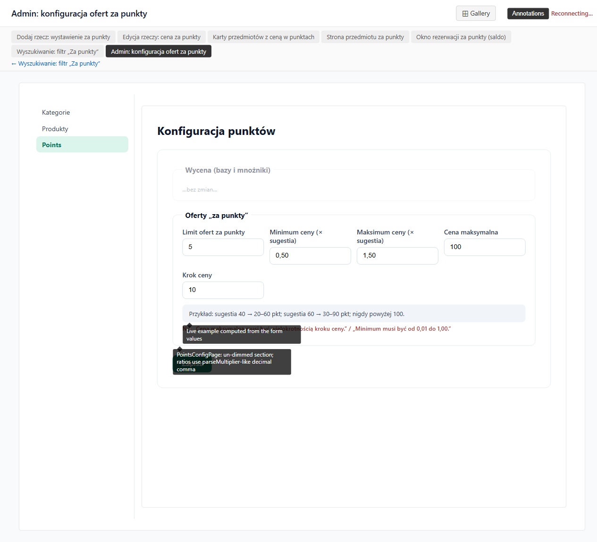
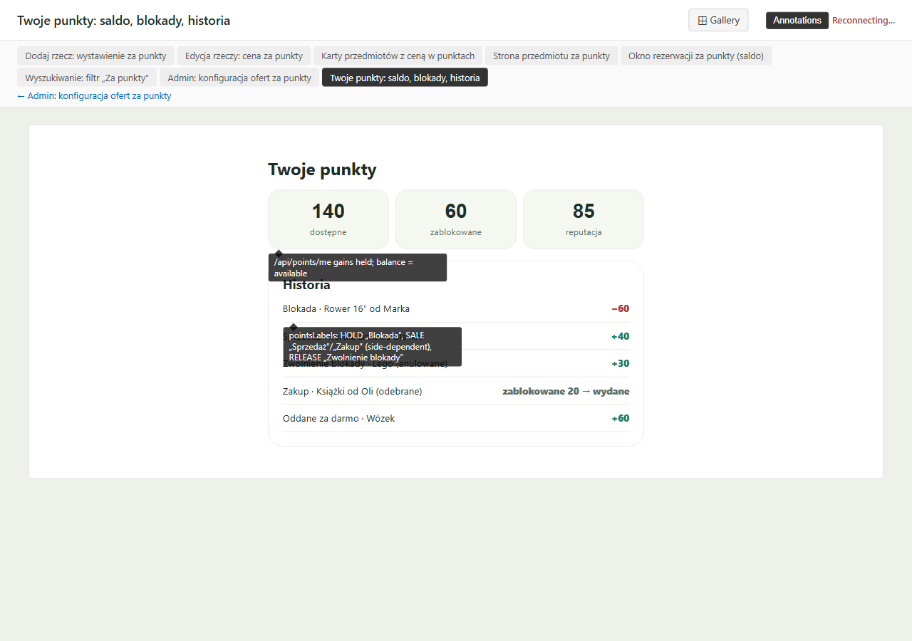

screen:item-create-points — ⚠
Structure, stepper, error and no-photo states match. The secondary label is „Wersja robocza” vs „Zapisz jako szkic” (spec L4).


Fidelity is high: 5 screens match, 3 deviate in minor ways, none drift. Every binding element is present with the mockup's copy. The deviations are a spec-sanctioned button label, a missing „Wszystkie” search chip and plain admin input chrome. The „Zakup” row's mobile layout is reported in the E2E report.
Structure, stepper, error and no-photo states match. The secondary label is „Wersja robocza” vs „Zapisz jako szkic” (spec L4).

Forecast note and reserved note match the mockup text. The clamp case was not reproduced live.


Orange „N pkt” badge with ink text and the sr-only text; no suggestion on public cards.

Buyer, owner-held and buyer-after-take views all match.


Rows, action and the „Brakuje Ci N pkt.” state match. The 409 texts were not reproduced.


The „Za punkty” chip is present; there is no leading „Wszystkie” chip.


Five fields, live example and validation copy match; the inputs lack visible borders (page-wide).


Three tiles and the HOLD/RELEASE/SALE labels match; rows use the spec's subtitle form. At 390 px the Zakup row collapses (E2E M1).
